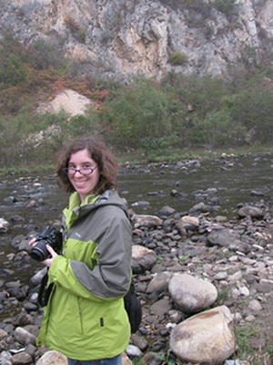
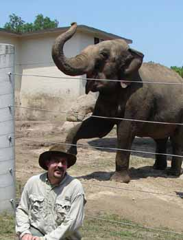

Amanda Falk
Ph.D.
Education
B.S. Biology, Lake Superior State University, 2007
M.S. Geology, University of Kansas, 2009
Advisors
Dr. Stephen Hasiotis
Dissertation Title
Anatomy and function of bird feet--the effect of behavior, medium and avian morphotype on trackway morphology
Research
I am interested in the tracks and traces of birds, both fossil and modern, as well as the general gross morphology and functional morphology of both fossil and ancient birds. I am also interested the evolution of avian migration, avian osteology, and the origin and evolution of birds. I also have minor interests in paleoecology and vertebrate anatomy (mainly in the functional morphology of animals other than birds). My current research focuses on analyzing the behaviors of Early Cretaceous bird tracks from the Haman Formation of South Korea, re-describing and interpreting bird tracks from several areas in China, as well as performing a series of morphologic measurements on the feet of fossil and modern birds to try and reconstruct soft tissue structures on the feet of Early Cretaceous fossil birds. I am also studying the behaviors and parameters under which modern bird tracks are produced.
Publications
Gong, E., Martin, L. D., Burnham, D. A., Falk, A. R., 2010. The birdlike raptor Sinornithosaurus was venomous. PNAS, v. 107(2), p. 766–768 (Cover paper).
Alexander, D. E., Gong, E., Martin, L. D., Burnham, D. A., Falk, A. R., 2010. Model tests of gliding with different hindwing configurations in the four-winged dromaeosaurid Microraptor gui. PNAS, v. 107(7), p. 2972–2976.
Falk, A. R., Hasiotis, S. T. and Martin, L.D., 2010. Feeding traces associated with bird tracks from the Lower Cretaceous Haman Formation, Republic of Korea. Palaois, v. 25, p. 730–741.
Falk, A. R. Tracking Mesozoic birds around the world. 2011. Journal of Systematic Palaeontology, v. 9(1) p. 85-90.
Falk, A. R., Martin, L.D. and Hasiotis, S. T., 2011. A morphologic criterion to distinguishing bird tracks. Journal of Ornithology, v. 152, p. 701–716.
Brian
F. Platt
Ph.D.
Education
B.S. Geology, Bloomsburg University of Pennsylvania, 2001
M.S. Paleontology, University of Kansas, 2005
Advisor
Dr. Stephen Hasiotis
Dissertaton Title
Quantification of paleoecological, paleohydrological, and
paleoclimatological information from the Upper Jurassic
Morrison Formation
Research
I have diverse interests in the field of ichnology, unified
by the overarching research goal of interpreting
paleoenvironments, paleoclimate, and paleoecology. I am
particularly interested in integrating new approaches and
quantitative technologies with traditional ichnological
methods. One aspect of my research focuses on how
sedimentary and physicochemical variables influence
megafaunal track formation and preservation; for this
project I am conducting trackmaking experiments with
elephants as modern analogs for sauropod dinosaurs. My goal
is to develop a method for quantifying ancient sediment
moisture and soil moisture from fossil megafaunal
footprints. I am also integrating ichnology, paleopedology,
and geochemistry to interpret paleoclimate of the Upper
Jurassic Morrison Formation. My goal is to look for
correlations between paleoclimatic and biotic patterns that
would suggest climatic influence on paleoecology. Another
of my projects has the goal of introducing novel
quantitative measures of trace fossils and modern traces
with new 3D laser scanning technology; this will improve
interpretations of trace fossils and facilitate enhanced
statistical and ichnotaxonomic studies.
Publications
Hasiotis, S.T., Reilly, M., Amos, K., Lang, S., Kennedy,
D., Todd, J.A., Michel, E., and Platt, B.F., in press,
Actualistic studies of the spatial and temporal
distributions of terrestrial and aquatic organism traces in
continental environments to differentiate lacustrine from
fluvial, eolian, and marine deposits in the geologic
record, in Baganz, O W., Bartov, Y., Bohacs, K., and
Nummendal, D., eds., Lacustrine sandstone reservoirs and
hydrocarbon systems: AAPG Memoir 95, 56 p.
Platt, B.F., Hasiotis, S.T., and Hirmas, D.R., 2010. Use of
low-cost multistripe laser triangulation (MLT) scanning
technology for three-dimensional, quantitative
paleoichnological and neoichnological studies, Journal of
Sedimentary Research, v. 80, p. 590-610 (journal cover).
Platt, B.F., 2009. Review of Bonebeds, edited by Rogers,
R.R., Eberth, D.A., and Fiorillo, A.R., PALAIOS, DOI:
10.2110/palo.2009.BR48.
Platt, B.F., and Hasiotis, S.T., 2008. A new system for
describing and classifying tetrapod-tail traces with
implications for interpreting the dinosaur-tail trace
record, PALAIOS, v. 23, p. 3–13.
Hasiotis, S.T., Platt, B.F., Hembree, D.I., and Everhart,
M.J., 2007. The trace-fossil record of vertebrates, in
Miller, W. III, ed., Trace Fossils: Concepts, Problems, and
Prospects, Elsevier Press, p. 196–218.
Andrew Connolly
M.S.
Education
B.S. Geology, University of Kansas, 2012
Advisors
Dr. Stephen Hasiotis
Research
I am interested in the biogeographic range of Mosasaurs, as well as the paleobiogeographical effects of the parietal foramen in Mosasaurs and Permian reptiles.

M.S.
Education
B.S. Geology, University of Cincinnati, 2013
Advisor
Dr. Stephen Hasiotis
Research
My project involves using ichnofossils and paleosols to investigate climate change during the deposition of the Upper Triassic Chinle Formation in Stevens Canyon, Utah. I am also interested in combining traces and paleosols into ichnopedofacies that will help in interpreting continental environments of deposition.
Publications
Hasiotis, S., Fischer, S., 2014. “New Interpretation for Very Large Diameter Burrows in the Petrified Forest Member, Upper Triassic Chinle Formation, Near Canyonlands National Park, Southeastern Utah: Therapsid Burrows?” Poster presentation, Geological Society of America Annual Meeting, Vancouver, British Columbia, Canada
Fischer, S., Hasiotis, S., 2014. “Preliminary Report on the Ichnopedofacies Associations in the Upper Triassic Chinle Formation, Stevens Canyon, Southeastern Utah: Evaluating Increasing Aridity Recorded During Chinle Deposition.” Poster presentation, Geological Society of America Annual Meeting, Vancouver, British Columbia, Canada
Fischer, S et al., 2012. “History of Heavy Metal Pollution in Cincinnati: Sediments in the Old Miami and Erie Canal.” Poster presentation, North Central Geological Society of America Conference, Dayton, Ohio.
Sean Hammersburg
M.S.
Education
B.S. Geology, Central Michigan University, 2011
Advisor
Dr. Stephen Hasiotis
Research
I am studying middle Cambrian marine trace fossils from the Spence Shale Member of the Langston Formation from the Wellsville Mountains, Utah.
Matt Jones

M.S.
Education
B.S. Biology, University of Kansas, 2007
Advisor
Dr. Stephen Hasiotis
Dr. Larry Martin
Thesis Title
Neoichnology of Bats: Implications for pterosaur locomotion
Research
I am interested in studying the tracks and trackways produced by bats in order to establish a database of potential bat traces to be found in the rock record. The possibility of bat tracks and trackways in the rock record will greatly expand our understanding of bat evolution and paleobiogeography. I will also use tracks and trackways produced by bats as a modern analog for pterosaur ichnofossils, such as Pteraichnus and Haenamichnus, in order to better understand pterosaur ecology.
Publications
York, H. A., P. F. Foster, M. F. Jones, W. H. Schwarz, A. L. Vezeau, and M. S. Zerwekh. 2008. Observations of cavity-roosting behavior in Costa Rican Lophostoma brasiliense (Chiroptera: Phyllostomidae). Mammalian Biology 73: 230-232.
Joshua Schmerge
Ph.D.
Education
B.S. Geology, University of Wyoming, 2007
M.S. Geology, University of Kansas, 2011
Advisors
Dr. Stephen Hasiotis
Dissertation Title
A statistical examination of the change in
body size of mammalian communities across the
Eocene-Oligocene Boundary near Douglas, Wyoming
Research
I am most interested in how global climate change affects
the evolution of mammals. For my thesis, I have been
studying the evolution of the mammalian fauna in the White
River Formation during the Eocene-Oligocene transition.
Global climate cooled dramatically at this time, so I use
the well-documented fauna of the White River Formation to
test hypotheses about the effect of climate change on
mammalian body size. I have collected body size data from
fossil mammals from the both the Eocene and Oligocene and
compared them statistically (chi-square testing) to
determine if the overall body size is different between the
two epochs. My work on this project has also required the
application of ichnology and paleopedology as I have
reconstructed the paleoecology and paleoclimate of my field
area.
I am also interested studying fossil trackways with the aim
of interpreting paleoecology and paleohydrology. I am
currently working on a project with Dave Riese and Dr.
Hasiotis on the trackways of vinegaroons. Studying the
quality of preservation in experimentally produced
trackways allows us to see how trackway morphology changes
as sediment and moisture change.